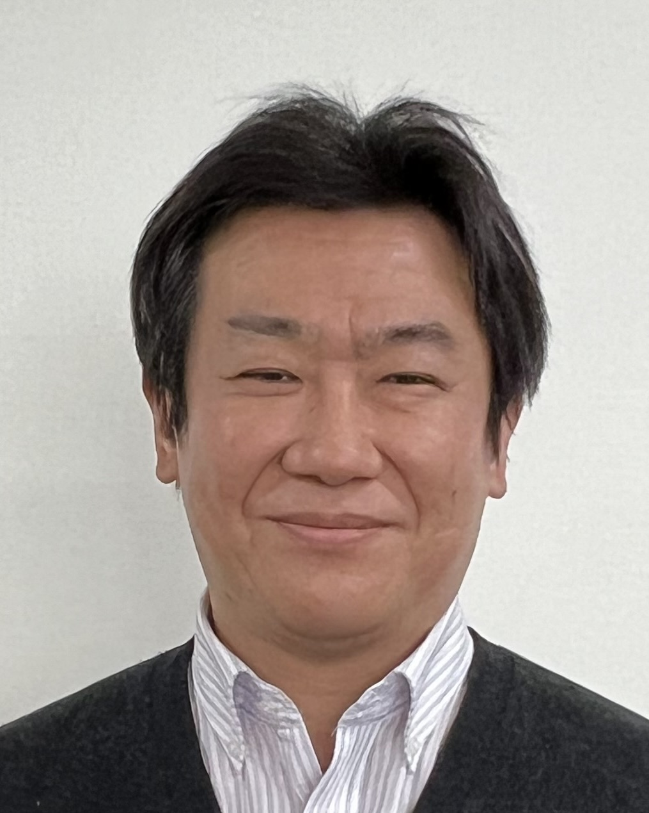

| 平成5年（1993年）4月 | 富山県立砺波高等学校 入学 | ||
| 平成8年（1996年）3月 | 富山県立砺波高等学校 卒業 | ||
| 平成8年（1996年）4月1日 | 名古屋大学工学部電気電子・情報工学科 入学 | ||
| 平成12年（2000年）3月27日 | 名古屋大学工学部電気電子・情報工学科 卒業 | March 27th, 2000 | BSc (Engineering), Department of Information Engineering, School of Engineering, Nagoya Univeristy |
| 平成12年（2000年）4月1日 | 名古屋大学大学院工学研究科博士課程前期課程計算理工学専攻 入学 | ||
| 平成14年（2002年）3月25日 | 名古屋大学大学院工学研究科博士課程前期課程計算理工学専攻 修了 | March 25th, 2002 | MSc (Engineering), Department of Computational Science and Engineering, Graduate School of Engineering, Nagoya University |
| 平成14年（2002年）4月1日 | 名古屋大学大学院工学研究科博士課程後期課程情報工学専攻 進学 | ||
| 平成16年（2004年）3月25日 | 名古屋大学大学院工学研究科博士課程後期課程情報工学専攻 短縮修了 | March 25th, 2004 | PhD (Engineering), Department of Information Engineering, Graduate School of Engineering, Nagoya Univeristy |
| 平成16年（2004年）4月1日〜平成19年（2007年）3月31日 | 名古屋大学大学院情報科学研究科情報システム学専攻 助手 | April 1st, 2004 - March 31st, 2007 | Research Associate, Department of Information Engineering, Graduate School of Information Science, Nagoya University |
| 平成19年（2007年）4月1日〜平成25年（2013年）3月31日 | 名古屋大学大学院情報科学研究科情報システム学専攻 助教（職名変更） | April 1st, 2007 - March 31st, 2013 | Assistant Professor, Department of Information Engineering, Graduate School of Information Science, Nagoya University (due to job title change) |
| 平成22年（2010年）7月1日〜平成22年（2010年）12月26日 | バレンシア工科大学客員研究員 | July 1st, 2010 - December 26th, 2010 | Visiting Researcher, DSIC, Technical University of Valencia |
| 平成25年（2013年）4月1日〜平成29年（2017年）3月31日 | 名古屋大学大学院情報科学研究科情報システム学専攻 准教授 | April 1st, 2013 - March 31st, 2017 | Associate Professor, Department of Information Engineering, Graduate School of Information Science, Nagoya University |
| 平成29年（2017年）4月1日〜令和7年（2025年）7月31日 | 名古屋大学大学院情報学研究科情報システム学専攻 准教授（組織改編） | April 1st, 2017 - current | Associate Professor, Department of Computing and Software Systems, Graduate School of Informatics, Nagoya University (due to organizational restructuring) |
| 令和7年（2025年）8月1日〜現在 | 名古屋大学大学院情報学研究科情報システム学専攻 教授 | April 1st, 2017 - current | Professor, Department of Computing and Software Systems, Graduate School of Informatics, Nagoya University |